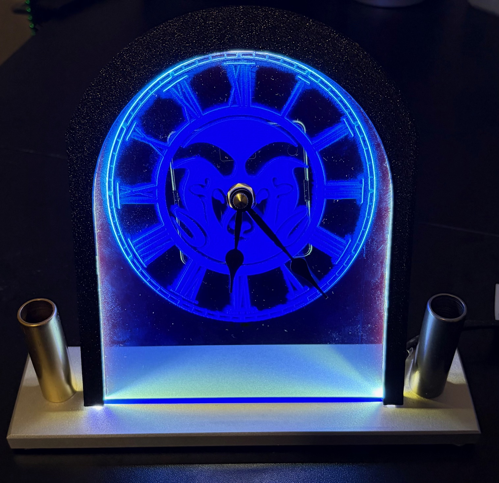
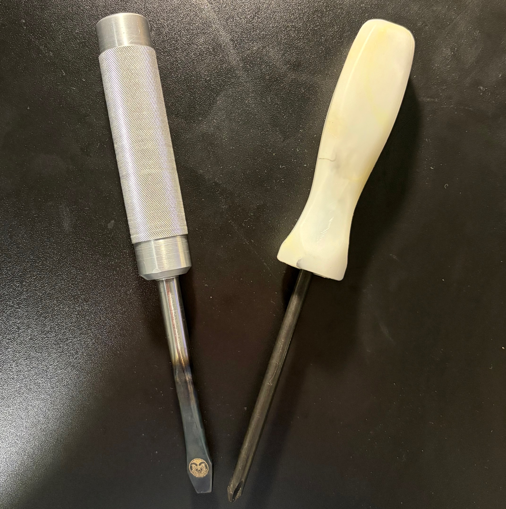
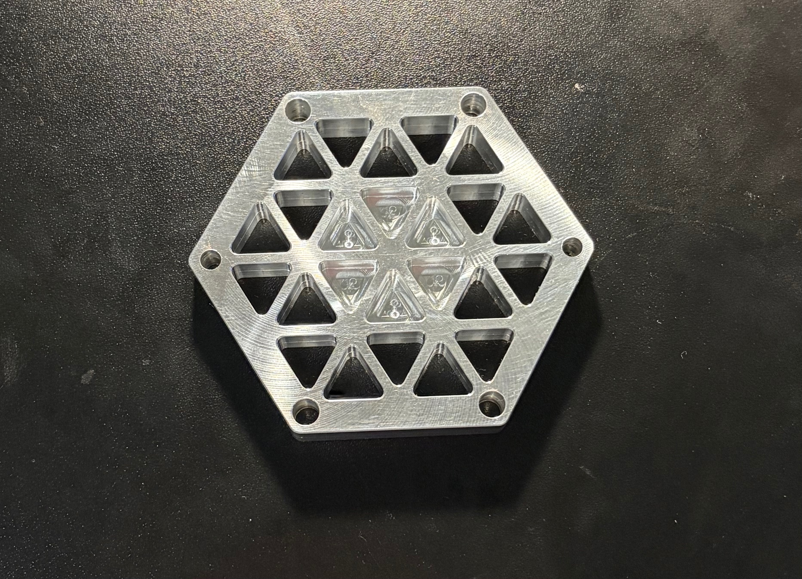

Coursework
In my manufacturing class, there were many useful projects that I was able to learn a lot of new skills and lessons from.

Clock
The objective was to manufacture a clock with integrated pencil holders on either side. This project emphasized metrology and tolerancing, showing how overly tight tolerances make a part difficult to manufacture and overly loose tolerances cause improper assembly or poor fit.
I gained hands-on experience with manual mills and lathes, learned to select speeds and feeds for different materials, and saw the differences in machinability and applications between aluminum, steel, and brass.

Screwdriver set
The goal was to manufacture an injection-molded Phillips head screwdriver and an aluminum flathead screwdriver with a hardened steel shaft. It introduced heat treatment, flat shank creation, CNC lathe operation, and safe handling of high-temperature metals and open flames.
I also learned the fundamentals of injection molding, including the force required to fill a mold, and why sharp edges should be avoided in molded designs.

CNC coaster
The coaster project demonstrated proficiency with CNC milling. I completed HAAS's online CNC training course, then an in-person practical exam, earning a HAAS CNC certification and a machined aluminum coaster.
It gave me familiarity with common G- and M-codes, a foundation in CNC machining principles, and readiness to work in a professional machine shop.